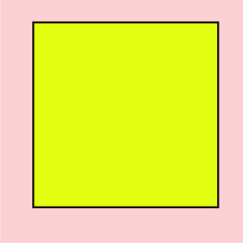
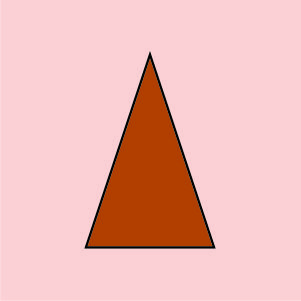
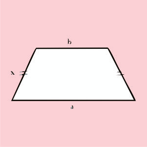
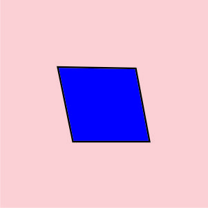
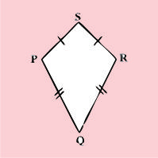
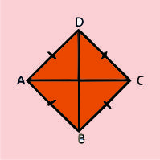

Bangun datar merupakan sebutan untuk bangun-bangun dua dimensi. Bangun datar merupakan
sebuah bidang datar yang dibatasi oleh garis lurus ataupun garis lengkung.
1. Persegi
Persegi, yaitu bangun datar yang berupa segiempat yang mempunyai 2 pasang sisi yang sejajar dan sama panjang sera keempat sudutnya siku-siku.

rumus luas :
L = s²
rumus keliling :
K = s + s + s + s
2. Persegi Panjang
Persegi panjang adalah sisi yang behadapan sama panjang, semua sudut sama besar.
rumus luas :
L = P x L
rumus keliling :
K = 2P x 2L
3. Segitiga
Segitiga, adalah sebuah bangun datar yang terbentuk dari tiga buah titik yang tidak segaris, macam macamnya, yaitu: segitiga sama sisi, segitiga sama kaki, segitiga siku-siku dan segitiga sembarang.

rumus luas : L = ½ x a x t
rumus keliling : K = s + s + s
4. Trapsium
Trapesium, adalah sebuah segi empat yang mempunyai tepat sepasang sisi yang sejajar.

L = ½ x (Jumlah yang sisi sejajar x tingginya ) = ½ x ( (a + c) x t )
K = Menjumlahkan semua panjang pada sisi-sisinya, yaitu: a + b + c + d
5. Jajargenjang
Jajar Genjang, adalah sebuah segi empat yang sisinya sepasang-sepasang yang sama panjang dan sejajar.

L = a x t
K = ( 2 x alas ) + ( 2 x sisi miring )
6. Layang-layang
Layang-layang, adalah sebuah segi empat yang salah satu diagonalnya memotong tegak lurus sumbu diagonal yang lainnya.

Luas = ½ x d1 x d2
Keliling = 2 x ( x+ y)
7. Belah ketupat
Belah Ketupat, adalah sebuah bentuk segi empat yang semua sisi-sisinya sama panjang dan kedua diagonalnya saling berpotongan tegak lurus.

L = ½ x d1 x d2
K = S + S + S + S
8. Lingkaran
Lingkaran, adalah sebuah bangun datar yang terbentuk dari himpunan semua titik persekitaran yang mengelilingi suatu titik asal dengan jarak yang sama. Jarak tersebut biasanya dinamakan r yaitu radius atau jari-jari.